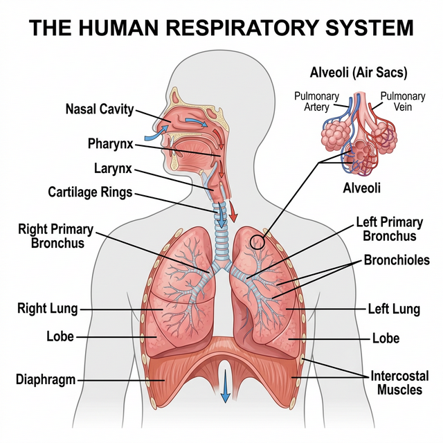

Chapter 14: Breathing and Exchange of Gases
As you have read earlier, oxygen ($O_2$) is utilised by the organisms to indirectly break down simple molecules like glucose, amino acids, fatty acids, etc., to derive energy to perform various activities. Carbon dioxide ($CO_2$) which is harmful is also released during the above catabolic reactions. It is, therefore, evident that $O_2$ has to be continuously provided to the cells and $CO_2$ produced by the cells has to be released out. This process of exchange of $O_2$ from the atmosphere with $CO_2$ produced by the cells is called breathing, commonly known as respiration.
Respiratory Organs
Mechanisms of breathing vary among different groups of animals depending mainly on their habitats and levels of organisation.
- Lower invertebrates: Sponges, coelenterates, flatworms exchange $O_2$ with $CO_2$ by simple diffusion over their entire body surface.
- Insects: Have a network of tubes (tracheal tubes) to transport atmospheric air within the body.
- Aquatic animals: Special vascularised structures called gills (branchial respiration) are used by most fishes and aquatic arthropods/molluscs.
- Terrestrial animals: Vascularised bags called lungs (pulmonary respiration) are used by terrestrial forms for the exchange of gases.
Human Respiratory System
We have a pair of external nostrils opening out above the upper lips. It leads to a nasal chamber through the nasal passage. The nasal chamber opens into the pharynx, a portion of which is the common passage for food and air. The pharynx opens through the larynx region into the trachea. The larynx is a cartilaginous box which helps in sound production and hence called the sound box.
Trachea is a straight tube extending up to the mid-thoracic cavity, which divides at the level of 5th thoracic vertebra into a right and left primary bronchi. Each bronchus undergoes repeated divisions to form the secondary and tertiary bronchi and bronchioles ending up in very thin terminal bronchioles. The terminal bronchioles give rise to a number of very thin, irregular-walled and vascularised bag-like structures called alveoli.

Figure 14.1: Schematic of the Human Respiratory System
Mechanism of Breathing
Breathing involves two stages: inspiration during which atmospheric air is drawn in and expiration by which the alveolar air is released out. The movement of air into and out of the lungs is carried out by creating a pressure gradient between the lungs and the atmosphere.
- Inspiration occurs if the pressure within the lungs (intra-pulmonary pressure) is less than the atmospheric pressure, i.e., there is a negative pressure in the lungs with respect to atmospheric pressure.
- Expiration takes place when the intra-pulmonary pressure is higher than the atmospheric pressure. The diaphragm and a specialised set of muscles – external and internal intercostals between the ribs, help in generation of such gradients.
Respiratory Volumes and Capacities
- Tidal Volume (TV): Volume of air inspired or expired during a normal respiration (approx. 500 mL).
- Inspiratory Reserve Volume (IRV): Additional volume of air, a person can inspire by a forcible inspiration (2500 - 3000 mL).
- Expiratory Reserve Volume (ERV): Additional volume of air, a person can expire by a forcible expiration (1000 - 1100 mL).
- Residual Volume (RV): Volume of air remaining in the lungs even after a forcible expiration (1100 - 1200 mL). This prevents the alveoli from collapsing.
Competency Based Questions (Previous Years & Sample Papers)
Q1. According to Boyle’s Law, the absolute pressure $P$ and volume $V$ of a given mass of confined gas are inversely proportional at a constant temperature ($P_1V_1 = P_2V_2$). During human inspiration, the contraction of the diaphragm and the external intercostal muscles increases the overall volume of the thoracic cavity by approximately $2%$ over its resting Functional Residual Capacity ($FRC$ of $\sim 2500$ mL). If atmospheric pressure is $760$ mmHg, what is the theoretical new intra-pulmonary pressure immediately after this $2%$ volume expansion (before any air flows in)? Explain why air subsequently rushes into the lungs.
Answer
Mathematical Calculation: Initial Volume $V_1 = 2500 \text{ mL}$. Initial intra-pulmonary pressure (resting, equilibrium with atmosphere) $P_1 = 760 \text{ mmHg}$.
The volume expands by $2%$. New Volume $V_2 = 2500 + 0.02(2500) = 2500 + 50 = 2550 \text{ mL}$.
Using Boyle’s Law ($P_1V_1 = P_2V_2$): $$ 760 \cdot 2500 = P_2 \cdot 2550 $$ $$ P_2 = \frac{760 \cdot 2500}{2550} $$ $$ P_2 = 760 \cdot \frac{50}{51} \approx 760 \cdot 0.9804 \approx 745.1 \text{ mmHg} $$
The theoretical new intra-pulmonary pressure is roughly $745.1$ mmHg (a drop of about $15$ mmHg, though in reality, normal steady inspiration only requires a drop of $\sim 1-2$ mmHg to draw in a tidal volume, meaning the actual thoracic expansion for quiet breathing is much less than $2%$, but mathematically based on the prompt, it scales down).
Biological Explanation: Because the new intra-pulmonary pressure ($745.1$ mmHg) is now less than the external atmospheric pressure ($760$ mmHg), a negative pressure gradient is established. Gases strictly move from areas of higher pressure to areas of lower pressure. Therefore, atmospheric air rushes through the conducting airways into the lungs until the intra-pulmonary pressure equalizes with the atmospheric pressure.
Q2. The specific rate of diffusion of gases across the alveolar-capillary membrane is mathematically governed by Fick’s Law of Diffusion: $V_{gas} \propto \frac{A}{T} \cdot D \cdot (P_1 - P_2)$, where $A$ is the surface area, $T$ is the membrane thickness, $D$ is the diffusion constant for the gas, and $(P_1 - P_2)$ is the partial pressure gradient. Emphysema is a chronic respiratory disorder associated with severe cigarette smoking. Structurally, emphysema results in the destruction of the alveolar walls, merging many tiny alveoli into fewer, vastly larger irregular air spaces. Based strictly on Fick’s Law, which specific variable is pathologically altered in emphysema, and mathematically how does this affect the net diffusion rate of oxygen?
Answer
Affected Variable: In emphysema, the destruction of the delicate interior alveolar septa (walls) means that what used to be hundreds of tiny, separate bubbles (high surface-to-volume ratio) merge into a few large, balloon-like spaces. Therefore, the specific variable that is pathologically altered is $A$, the total respiratory surface area.
Mathematical Effect on Diffusion: According to Fick’s Law of Diffusion ($V_{gas} \propto A$), the rate of gas diffusion ($V_{gas}$) is directly proportional to the available surface area ($A$). Because emphysema drastically decreases the total surface area $A$ available for gas exchange in the lungs, the mathematical consequence is a proportional decrease in the net diffusion rate of oxygen (and $CO_2$). Consequently, the patient suffers from chronic hypoxia (oxygen deprivation) and shortness of breath, regardless of how deeply they inhale, because the physical membrane interface required for the gas exchange has been permanently lost.
Q3. Human Vital Capacity (VC) represents the maximum volume of air a person can breathe in after a forced expiration. Write the mathematical equation that defines Vital Capacity (VC) strictly in terms of the standard lung capacities (Tidal Volume (TV), Inspiratory Reserve Volume (IRV), and Expiratory Reserve Volume (ERV)). If a healthy athlete has a $TV = 500$ mL, $IRV = 3000$ mL, $ERV = 1200$ mL, and Residual Volume (RV) = $1200$ mL, calculate their Total Lung Capacity (TLC). Why can TLC never be explicitly measured using simply a spirometer?
Answer
Mathematical Equations and Calculations: Vital Capacity ($VC$) is the sum of the maximum inhale volume on top of a normal breath, the normal breath, and the maximum exhale volume. Equation: $VC = IRV + TV + ERV$
Total Lung Capacity ($TLC$) is the total volume of air the lungs can hold after a maximum forced inspiration. It is the Vital Capacity plus the Residual Volume. Equation: $TLC = VC + RV$ (or $TLC = IRV + TV + ERV + RV$)
Calculating $TLC$ for the athlete: $VC = 3000 + 500 + 1200 = 4700 \text{ mL}$ $TLC = 4700 + 1200 = \mathbf{5900 \text{ mL}}$ (or 5.9 Liters).
Spirometry Limitation: A standard spirometer functions by measuring the volume and flow of air that is explicitly inhaled into or exhaled out of the lungs through the mouthpiece. Therefore, a spirometer can only measure exchangeable air volumes ($TV$, $IRV$, $ERV$, and thus $VC$). Residual Volume (RV) is the volume of air that permanently remains in the lungs to keep the alveoli open; it can never be exhaled. Since the RV never passes through the spirometer, nor can $TLC$ (which includes $RV$) be directly measured. Computing $RV$ (and thus $TLC$) requires more complex indirect methods like helium dilution or body plethysmography.